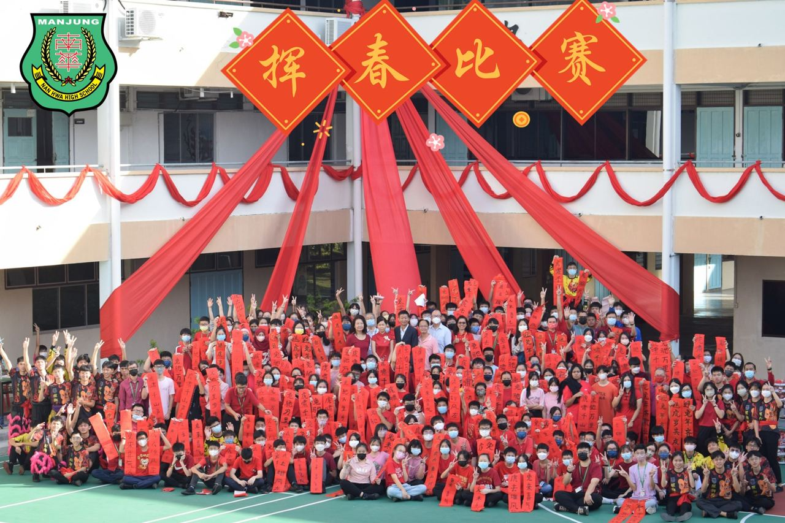
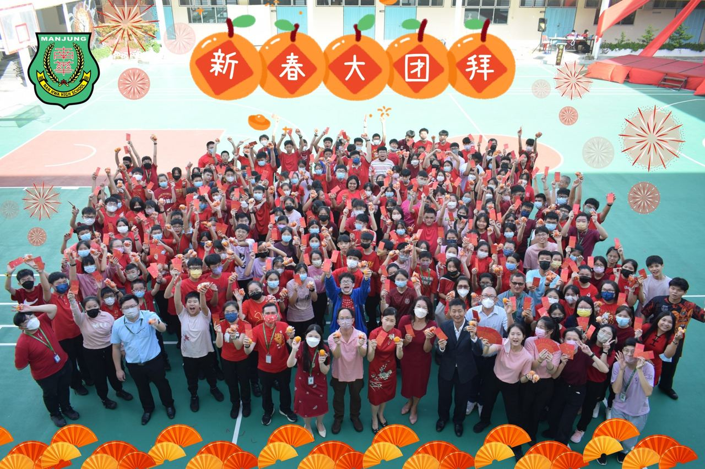
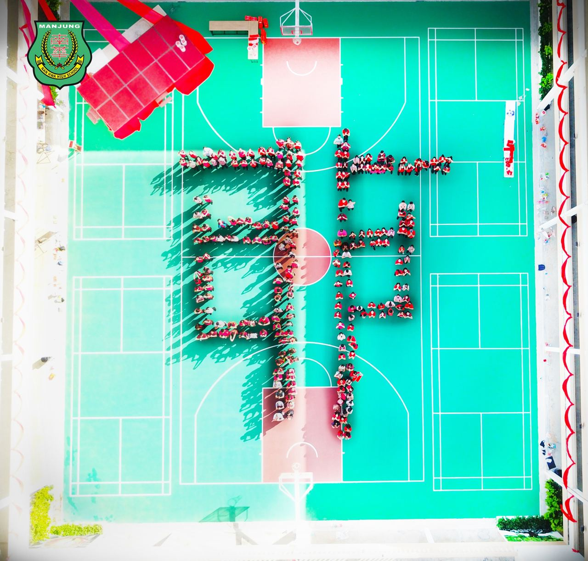
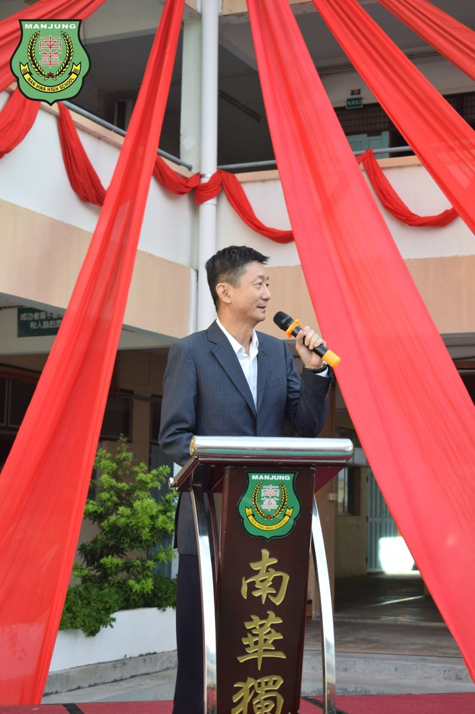
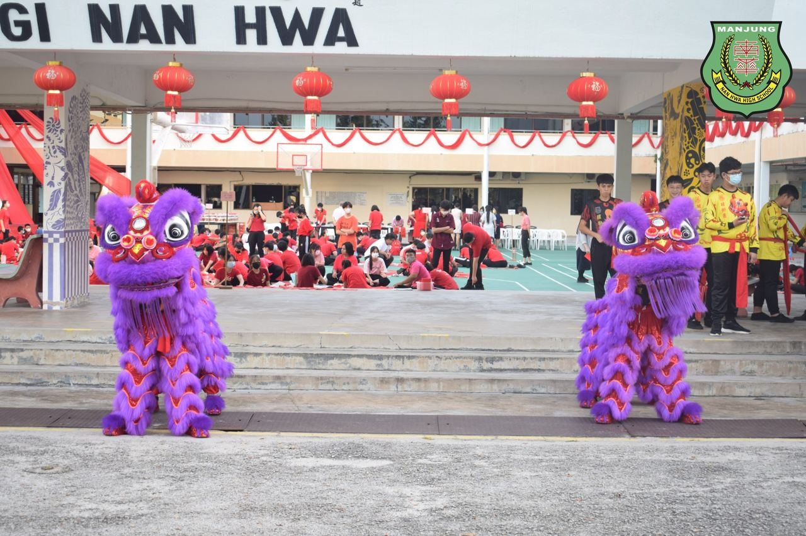
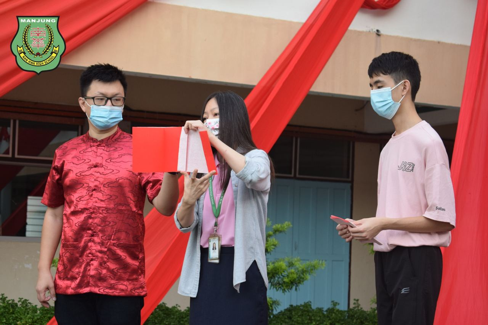
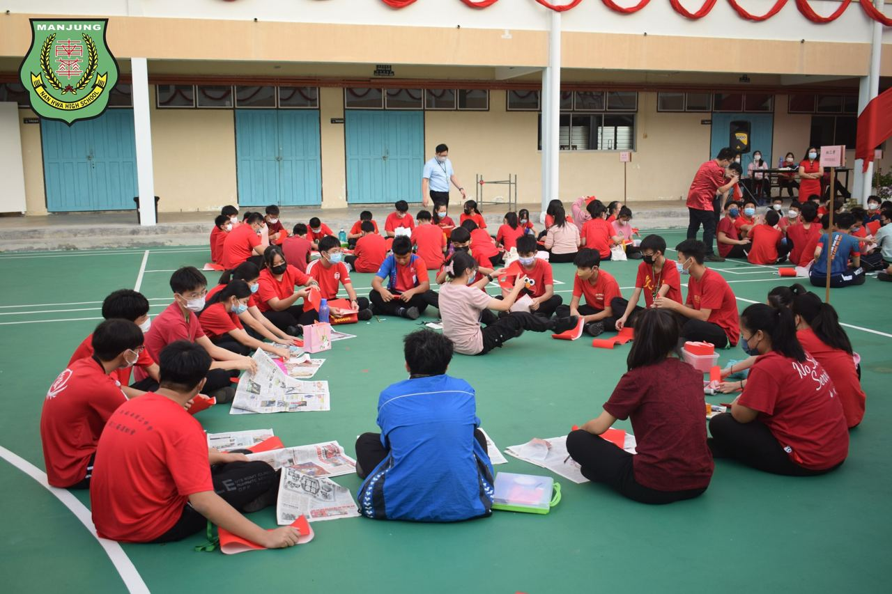
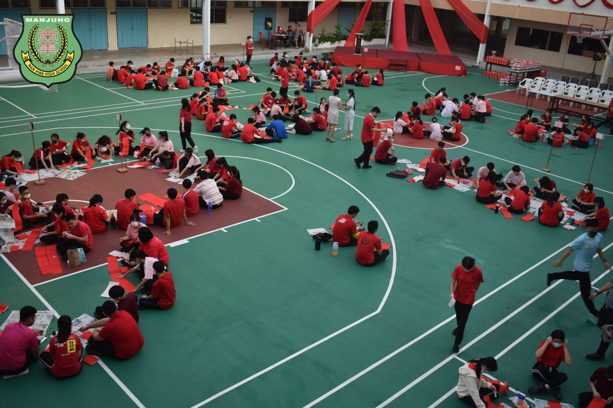

癸卯年挥春比赛 暨 新春大团拜
癸卯年挥春比赛 暨 新春大团拜
南华董家教师生列“卯”字贺新春
本校曼绒南华独中于日前举办癸卯年挥春比赛暨新春大团拜，邀请董家教成员前来出席，列阵排出“卯”字，寓意着“万物从冬季黎明中苏醒、正式迎来春天，蕴含无限的生机与活力”祝贺各界在癸卯新春佳节迸发无限生机与活力，共迎美好前景。
南华独中董事长颜登逸先生致辞中提及，在新的一年里，除了要心怀感恩平安迎来春节，也要时刻居安思危，随时随地准备迎接新挑战。他祝贺学生学业进步，步步高升之余，不忘提醒学生唯有马步扎实、基础打稳，才能平地一声雷，响彻云霄。
南华独中校长陈丽冰博士在致辞中回顾南华独中自疫情办学的不容易，并期盼与祝福全校师生在新的一年继续保持一如既往的雄心壮志，戳力同心，继续扩大教育力量，开拓更多学习平台，种下共谋共享共荣的繁荣果实。
董事会也藉新春大团拜这欢庆场合，赠予全校教职员新春包裹，同时也提前拜年，派送红包与柑给全体教职员生，同欢共庆新春的来临。
#癸卯 #挥春比赛 #新春大团拜 #拜年
#南华独中 #曼绒 #实兆远







